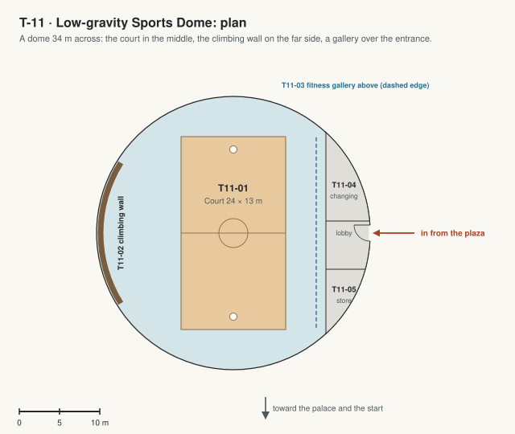

T-11 · Low-gravity Sports Dome
Games in Mars gravity, a climbing wall and a fitness gallery under one dome; a link from behind Infinity Hall's stage.

| Code | Room | What it is for | Size |
|---|---|---|---|
| T11-01 | Court | A sprung timber court 24 by 13 m for basketball and volleyball, where a jump lasts 2.6 times as long as on Earth. Also: Assemblies. | 310 m² |
| T11-02 | Climbing wall | A wall 10 m tall and 18 m wide on the far side, following the dome's curve, so it leans out near the top. | |
| T11-03 | Fitness gallery | On a gallery over the entrance side: treadmills with harnesses that pull you down to your Earth weight, rowers and bikes, a view of the court. Keeps bones and muscles strong in Mars gravity. | 130 m² |
| T11-04 | Changing rooms | Two, with showers, under the gallery by the entrance. | 39 m² |
| T11-05 | Equipment store | Under the gallery: balls, nets, mats and harnesses. | 24 m² |